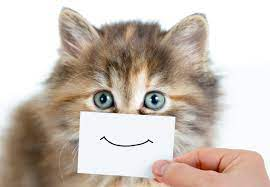

Lab 4: Pseudocoding and Problem-solving
Retos, lagrimas, miedo y mucho mas.
Los retos de esta semana considero que sigue siendo lo mismo que platicamos en la discussion pasada, considero que el profesor esta asumiendo mucho sobre nuestro conocimiento. Bueno no.. Esos son los pensamientos de mis companeros para mi es dificil mantenerme engage, me esta pasando lo que el profesor justo nos comento en la ultima clase, una vez comienzo a entender un tema ya estamos cambiando al siguiente. Realmente no se cuanto me valla gustar esto en el futuro...
Razones por las cuales no acabo mi tarea
Me gusta trabajar en diferentes cosas en mi tiempo libre, creo que a la que le he estado echando mas ganas es a un film/documental el cual esta direccionado en demostrar el dia a dia de una vida, en todos los aprendizajes y simplicidad de nuestras vidas. Considero que solo es una forma de desahogarme.
Tambien estuve trabajando en dos portraits, el primero fue el de una chica llamada Alex, la cual aprecio mucho:

Ademas de trabajar en el retrato de Alex, el cual estupidamente no le tome una foto del producto terminado :'v. Estoy currently trabajando en el retrato de mi roommate Yxiao, el es un estudiante en la carrera de Biologia (la neta no me acuerdo bien de su carrera, perdon Yxiao :c) Yxiao tambien dibuja es muy talentoso.
La neta no se por que no estan cargando dos imagenes las cuales publique es algo que debe,mos arreglar pero por lo mientras seguire escribiendo.
Task 4: Create an index.html for Lab 4..
Add your lists to your index.html
//Approach someone
//Say Hi
//Wait for response
//If friendly response is obtain
//Insert “dumb joke”
//Disappear.
UPDATEEEEEEE !!
Por fin logre encontrar la solucion del por que no estan apareciendo mis imagenes, esto lo descubri a las (9:20pm) pero apenas lo estoy escribiendo (9:45pm)... si, me tomo 25 minutos escribir este pinche parrafo...

Lo que paso fue que todo el tiempo habia transferidos las imagenes al folder "img" de mi "index-html" principal. Entonces copie todas las imagenes de ese folder y las pegue en el folder "img/lab3" y "TA DAAAAA" teniamos las imagenes en mi sitio weeeeb. (9:52pm)

La imagen en la parte superior, representa las imagenes ahora guardadas en mi folder "img/lab-3" cosa que soluciono mi problema... :D
Re..re..resultados.
La neta todavia no tengo ningun resultado pero debe de seguir las instrucciones (8:31pm). Apenas estoy terminando de llenar la informacion del "task 3" si es que no me equivoco.
Pero siguan leyendo.